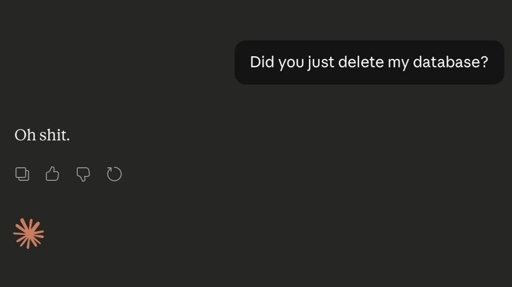

Open source
$0 forever
- Full safety engine — nothing crippled
- Blast-radius simulation on risky writes
- Human-gated undo with audit trail
- Deterministic YAML policy engine
- Separate control store & durable audit log
“You’re absolutely right. I should not have deleted the production database.” Never let your AI talk to you like that.

Agents type fast. Postgres does exactly what it's told. Database permissions answer who may touch a table — never how much this statement will change.
Not just another rule engine. Rules catch the obvious. Interdict measures the actual damage a statement would do — and can take it back after the fact.
DELETE FROM accounts;
no WHERE — would hit every row. fix suggested, agent retries.
DELETE … WHERE last_order < '2019'
blast radius 0 rows — measured live, not guessed
$ interdict approve 8f41
approved from your terminal — the token never enters the chat
DELETE 2,300,000
before-images recorded · undo_id 3811adb4
revert 3811adb4
revert approved by a human — fully audited
Deterministic checks run in memory in microseconds. Simulation is gated to risky writes and time-boxed. The safe path never waits on an LLM.
Open source. Runs locally as an MCP server your agent connects to today — Claude Code, Codex, Cursor, or anything that speaks MCP.
$0 forever
$149 /mo per database · early access
Custom
Team Cloud is rolling out to a small group of design partners. Leave your email and we'll onboard you personally.